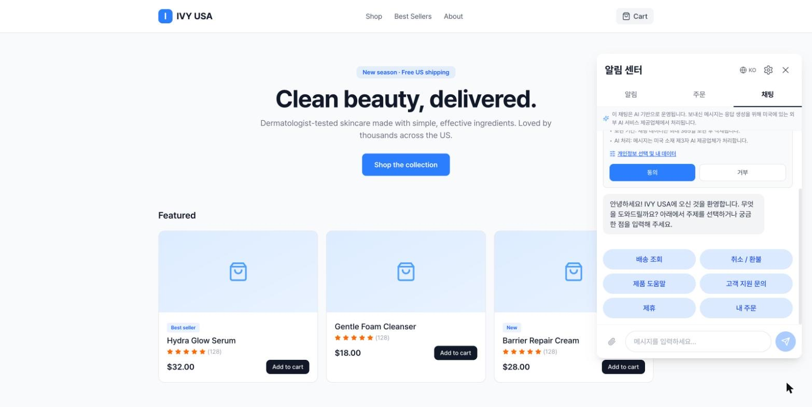
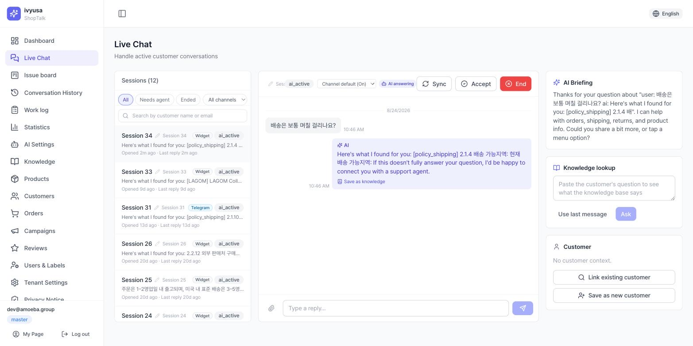
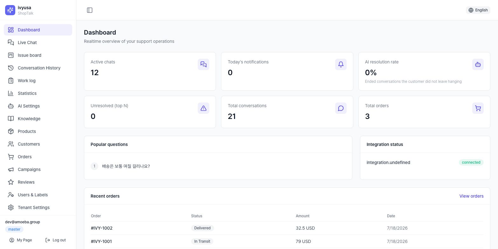
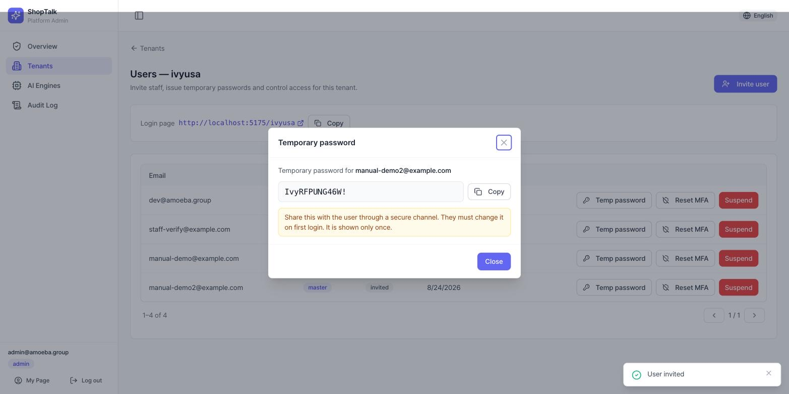

Bắt đầu
1.1 Truy cập bảng điều khiển
- Bảng điều khiển tenant:
https://shoptalk.amoeba.site/user/<slug>— địa chỉ đăng nhập riêng theo từng cửa hàng - Quản trị viên nền tảng:
/admin/login - Tài khoản được mời đăng nhập lần đầu bằng mật khẩu tạm thời rồi qua bước đổi bắt buộc (từ 10 ký tự·3 loại ký tự·cấm mật khẩu phổ biến)
- master/director·quản trị viên hệ thống bị bắt buộc đăng ký MFA (TOTP) — khi đăng ký, 10 mã khôi phục chỉ hiển thị một lần
Toàn bộ quy trình onboarding: Sổ tay thiết lập nhanh chương 1~2.
1.2 Vai trò·quyền hạn (RBAC)
- Cấp bậc: master · director · manager · staff / Nhãn công việc: consult (tư vấn) · accounting (kế toán) · operations (vận hành)
- Hiển thị menu theo 2 tầng: ① menu quản trị viên nền tảng cung cấp cho tenant → ② quyền theo cấp bậc của master tenant + ngoại lệ theo người dùng (thẻ Quyền truy cập menu trong [Cài đặt gian hàng]). Nhập URL trực tiếp cũng bị máy chủ kiểm tra lại và chặn
- Chính sách hiển thị theo chủ sở hữu (ACL) áp dụng bổ sung bên trên quyền chức năng
1.3 Menu bảng điều khiển
Bấm logo ở thanh bên sẽ mở danh sách thẻ các màn hình truy cập được (/menu).
| Menu | Đường dẫn | Công dụng |
|---|---|---|
| Tổng quan | /dashboard | KPI·câu hỏi phổ biến·trạng thái tích hợp |
| Trò chuyện trực tiếp | /live-chat | Tư vấn thời gian thực·xử lý chuyển tiếp |
| Bảng yêu cầu | /issues | Bảng kanban ticket yêu cầu (tenant quy trình native) |
| Lịch sử hội thoại | /history | Tra cứu hội thoại cũ·kiểm tra căn cứ |
| Nhật ký công việc | /work-log | Truy vết kiểm tra thao tác của nhân viên tư vấn |
| Thống kê | /statistics | Thống kê câu hỏi của khách hàng |
| Cài đặt AI | /ai-setting | Agent·persona·quy tắc·kịch bản·công cụ·kiểm duyệt·huấn luyện |
| Kho tri thức | /knowledge | Tài liệu tri thức·nguồn·kiểm chứng |
| Khách hàng / Đơn hàng / Sản phẩm | /customers /orders /products | Tra cứu·quản lý dữ liệu đệm |
| Chiến dịch / Đánh giá | /campaigns /reviews | Quản lý gửi tin·đánh giá |
| Người dùng | /users | Mời thành viên·cấp bậc·nhãn |
| Cài đặt gian hàng | /settings | Tích hợp·widget·chuyển tiếp tư vấn·quyền menu |
| Thông báo quyền riêng tư | /privacy-notice | URL chính sách·phiên bản đồng ý |
| Trang của tôi | /my-page | Hồ sơ·mật khẩu·MFA |
| Quản trị | /admin/* | Quản lý nền tảng (chỉ quản trị viên hệ thống) |
Widget khách hàng
2.1 Bố cục màn hình
- Launcher trên trang cửa hàng (vị trí·kích thước·biểu tượng theo cài đặt chủ đề của tenant) → bảng (toàn màn hình trên di động / thẻ nổi trên desktop)
- Phần đầu: tên hiển thị của cửa hàng (hoặc logo), chuyển ngôn ngữ (6 thứ tiếng en/es/ko/vi/ja/zh — khi chuyển, ngôn ngữ phiên cũng được cập nhật lên máy chủ nên ngôn ngữ trả lời của AI đổi theo), cài đặt (bánh răng), đóng
- Tab: Thông báo / Đơn hàng / Trò chuyện — tab hiển thị·thứ tự·vị trí (trên/dưới) theo cài đặt của tenant. Chỉ còn 1 tab thì thanh tab tự ẩn
2.2 Tab thông báo·đơn hàng
- Chip tab thông báo: Tất cả · Sự kiện / chip tab đơn hàng: Đơn hàng (danh sách đơn) · Giao hàng · Đánh giá · Yêu cầu. Tắt một tab thì các chip của nó được hấp thu vào tab còn lại — tắt tab không làm mất chức năng
- Mỗi mục: biểu tượng·tiêu đề·huy hiệu trạng thái·nội dung·thời gian tương đối·chấm chưa đọc. Mục chưa đọc mới nhất được làm nổi bật
- Chi tiết đơn hàng: sản phẩm·tổng tiền·bậc theo dõi giao hàng·tra cứu vận chuyển·hỏi về đơn này (đưa mã đơn vào chat)·viết đánh giá theo sản phẩm (sao 1~5 + nhận xét)
- Danh sách đơn nội tuyến chỉ hiển thị giai đoạn gần đây — "Xem thêm" dẫn đến trang cá nhân của chính cửa hàng (Cafe24 là danh sách đơn, còn lại là trang tài khoản)
2.3 Tab trò chuyện
- Trên cùng: thông báo tư vấn bằng AI + liên kết kết thúc tư vấn (chỉ khi đang diễn ra)
- Biểu ngữ đồng ý: hiển thị khi vào lần đầu hoặc khi phiên bản thông báo thay đổi — trước khi đồng ý, chức năng cần thông tin cá nhân bị hạn chế
- Nút kịch bản: menu nhanh do tenant cấu hình (mặc định 6 loại). Hỗ trợ sản phẩm mở menu con (cách dùng·thành phần·đổi/trả·hàng về lại). Sau câu trả lời có chip nhanh (đơn của tôi/giao hàng/trả hàng/kết nối nhân viên tư vấn)
- Xác minh danh tính 2 cách: ① đăng nhập cửa hàng — redirect (mặc định)/popup, tự xử lý đường dẫn đăng nhập Cafe24·Shopify, quay lại thì widget tự mở lại ② tra cứu đơn không cần tài khoản — mã đơn+email (giới hạn số lần)
- Đính kèm: ảnh ≤10MB (HEIC tự chuyển đổi) / tệp ≤20MB (pdf·txt·csv·docx·xlsx), tối đa 5 tệp mỗi tin nhắn
- Chỉ báo chờ 3 loại: AI đang soạn / nhân viên tư vấn đang trả lời / chờ chuyển tiếp
- Kết thúc·mức độ hài lòng: hội thoại đã kết thúc hiển thị thẻ mức độ hài lòng (5 mức emoji = 1~5 điểm) trong vòng 24 giờ. Gửi tin nhắn mới sẽ bắt đầu phiên tư vấn mới


2.4 Cài đặt (bánh răng)
- Quản lý đồng ý: xem trạng thái·thời điểm·phiên bản, rút lại (xác nhận 2 bước — rút lại thì dừng tư vấn), đồng ý lại
- Sau khi đăng nhập: từ chối nhận marketing (một công tắc — từ chối khuyến mãi·phiếu giảm giá·mời đánh giá, thông báo đơn hàng·giao hàng không bị ảnh hưởng), từ chối bán·chia sẻ dữ liệu (CCPA/CPRA), xuất dữ liệu của tôi (JSON), xóa dữ liệu của tôi (xác nhận 2 bước — hoàn tất thì widget về trạng thái đăng xuất)
- Ma trận nhận tin danh mục×kênh đã gỡ khỏi widget — chuyển sang chính sách của cửa hàng (cài đặt kênh thông báo trong bảng điều khiển)
Luồng trả lời của AI (tóm tắt)
Tin nhắn khách hàng → phân loại ý định (cần thông tin cá nhân → hướng dẫn xác minh danh tính)
→ khớp chuyển tiếp bắt buộc theo chính sách (deny-list) → chuyển thẳng nhân viên tư vấn, không qua AI
→ tìm kiếm tri thức (RAG) → tạo câu trả lời (persona+quy tắc, tính độ tin cậy) → kiểm duyệt
→ độ tin cậy đủ: trả lời khách + nguồn / thiếu·bị chặn·khách yêu cầu: hàng chờ nhân viên tư vấn- Tin nhắn do nhân viên tư vấn gửi cũng qua kiểm duyệt y hệt (không thể bỏ qua, lỗi thì chặn)
- Cách điều chỉnh từng điểm: Sổ tay tri thức·AI
Bảng điều khiển live chat
Bố cục 3 cột: hàng chờ (trái) — hội thoại (giữa) — ngữ cảnh (phải). Danh sách tự làm mới mỗi 5 giây.
4.1 Hàng chờ (trái)
- Phạm vi: Tất cả / Cần nhân viên / Đã kết thúc (mặc định Tất cả — hội thoại AI đang tiếp cũng hiển thị)
- Lọc kênh: widget·Telegram·Viber·Zalo·LINE·WhatsApp·Kakao·SMS·email + tìm theo tên/email khách
- Mỗi hàng: bí danh phiên (sửa nội tuyến được), huy hiệu kênh·trạng thái, chip "tự động trả lời OFF", tin nhắn cuối, thời gian trôi qua
4.2 Hội thoại (giữa)
- Điều khiển tự động trả lời: theo mặc định kênh / tự động / duyệt rồi gửi / tắt + huy hiệu trạng thái. Hội thoại đã được nhân viên tư vấn tiếp nhận thì nhân viên trả lời được ưu tiên
- Nút: [Nhận] (tiếp nhận) · [Trả về AI] (chỉ ở trạng thái nhân viên, có hộp xác nhận) · [Kết thúc] · [Đồng bộ]
- Chế độ duyệt rồi gửi: xem xét bản nháp AI trong bảng có thể chỉnh sửa (kèm độ tin cậy) → [Duyệt gửi] (danh nghĩa nhân viên tư vấn, kiểm duyệt·kiểm tra như nhau) / [Hủy bỏ]
- Soạn tin nhắn: văn bản + đính kèm (cùng hạn mức với widget). Gửi bị từ chối = kiểm duyệt chặn. Kênh SMS chỉ nhận (ô soạn bị tắt)
- Dưới bong bóng AI có [Lưu câu trả lời này vào kho tri thức] (master/director) — chụp thành bản nháp tài liệu tri thức
4.3 Ngữ cảnh (phải)
- Tóm tắt của AI: tóm tắt·ý định·cảm xúc·hành động khuyến nghị
- Tra cứu tri thức: hỏi trực tiếp kho tri thức trong hội thoại → câu trả lời·nguồn (huy hiệu stale/mâu thuẫn) → [Gửi cho khách] / [Sửa rồi gửi] / [Đề xuất vào kho tri thức] (đăng ký chờ duyệt)
- Thẻ khách hàng: tên·email·điện thoại·hạng + liên kết/tạo khách hàng · thẻ đơn hàng gần đây
- Bảng yêu cầu (quy trình native): số yêu cầu·trạng thái·loại·số lần mở lại, [Giải quyết]/[Từ chối] (bắt buộc lý do), phân công lại, dòng thời gian sự kiện

4.4 Cảnh báo chuyển tiếp·tự động kết thúc
- Cảnh báo escalation: có chuyển tiếp mới thì trong 10 giây hiện hộp thoại thông báo (lý do: độ tin cậy thấp/kiểm duyệt chặn/khách yêu cầu) → [Mở hội thoại]
- Tự động kết thúc hội thoại bị bỏ quên (máy chủ, chỉ kênh widget): hai bên im lặng 30 phút → "Còn gì tôi có thể giúp thêm không?" → không phản hồi trong 1 phút thì kết thúc. Hội thoại quá 7 ngày kết thúc lặng lẽ. Hội thoại chờ hồi âm email không bị tự động kết thúc
Bảng yêu cầu
- Cột kanban: Đã tiếp nhận → Đang xử lý → Đã giải quyết/Đã từ chối → Đã đóng (chỉ kéo được bước di chuyển hợp lệ — cảm ứng dùng hộp chọn di chuyển trên thẻ)
- KPI trên cùng: tiếp nhận·đang xử lý·chưa phân công·thời gian giải quyết trung bình·tỷ lệ mở lại (làm mới 30 giây)
- Thẻ: số yêu cầu·loại·huy hiệu SLA (⚠️ sắp trễ / 🔥 quá hạn)·số lần mở lại·bí danh phiên·câu cuối của khách·người phụ trách·công tắc khẩn cấp/thường
- Từ chối bắt buộc lý do (không thể theo chính sách/phân công sai/spam + ghi chú). Sau giải quyết/từ chối có thể mở lại
- Bấm thẻ → xem trước 10 lượt gần nhất (chỉ đọc, việc xem được ghi kiểm tra) → [Mở phiên]
- Giờ chuẩn SLA (thường/khẩn cấp, 1~168h) đặt tại mục Chuyển tiếp tư vấn trong [Cài đặt gian hàng]
Lịch sử hội thoại
- Bộ lọc: khoảng thời gian · người phụ trách (nhãn consult) · trạng thái · escalation · tìm trong nội dung tin nhắn (chạy bằng nút — thuộc diện ghi kiểm tra) · bao gồm hội thoại xem thử
- Bấm hàng → toàn văn hội thoại: khách/người phụ trách/kênh/ngôn ngữ/bắt đầu·kết thúc + bong bóng theo phát ngôn. Mỗi câu trả lời AI có chip tài liệu căn cứ (tiêu đề+độ tương đồng, bấm để đến tài liệu tri thức) và huy hiệu độ tin cậy — truy được vì sao trả lời như vậy. Tại thời điểm chuyển tiếp có huy hiệu lý do
- Việc tra cứu được ghi vào kiểm tra. Xuất dữ liệu (CSV v.v.) 🟡 chưa có
Nhật ký công việc
Truy vết kiểm tra thao tác của nhân viên tư vấn (lăng kính nhân viên của cùng kho lưu với nhật ký kiểm tra của quản trị viên). Bộ lọc: khoảng thời gian·nhân viên tư vấn·hành động (nhận/gửi tin nhắn/liên kết khách/tạo khách/kết thúc/xem hội thoại/xem toàn văn). Cột: thời gian·nhân viên tư vấn·hành động·đối tượng·kết quả (thành công/thất bại).
Thống kê câu hỏi
- 4 tab chiều — ý định / tài liệu / từ khóa / cụm (mặc định 30 ngày gần nhất, ảnh chụp theo ngày)
- Biểu đồ xu hướng (số câu hỏi theo ngày) + bảng: nhãn·số câu hỏi·tỷ trọng·tỷ lệ escalation·không có nguồn·độ tin cậy trung bình
- Dấu ⚠ chú ý: hàng có tỷ lệ escalation từ 25% trở lên hoặc độ tin cậy trung bình thấp — dùng làm danh sách cần bổ sung tri thức. Tab tài liệu bấm hàng để đến tài liệu tri thức tương ứng
Tổng quan
6 KPI (mỗi cái liên kết đến màn hình tương ứng): tư vấn đang diễn ra · thông báo hôm nay · tỷ lệ AI tự giải quyết · Top N chưa giải quyết · tổng hội thoại · tổng đơn hàng. Xếp hạng câu hỏi phổ biến, trạng thái tích hợp (huy hiệu theo nhà cung cấp), 5 đơn hàng gần nhất.

Khách hàng·đơn hàng·sản phẩm
10.1 Khách hàng (/customers)
Danh sách (tên·email·hạng·số đơn·tổng chi tiêu·ngày tham gia) + tìm theo email. Thứ duy nhất sửa được là đổi hạng (guest/subscriber/regular) — hạng dùng để phân loại khách trong widget·tiếp khách bằng AI.
10.2 Đơn hàng (/orders)
Danh sách chỉ đọc các đơn hàng đồng bộ từ nền tảng (mã đơn·trạng thái·số tiền·số sản phẩm·ngày).
10.3 Sản phẩm (/products)
- Catalog sản phẩm đã đồng bộ (gồm sản phẩm lưu trữ). KPI: tổng·đang bán·lưu trữ·số đã vào kho tri thức (kèm thời điểm đồng bộ cuối)
- Huy hiệu đã vào kho tri thức hay chưa rất quan trọng — sản phẩm
chưa cólà sản phẩm AI không thể dùng trong câu trả lời. Sản phẩm hoàn toàn không có mô tả sẽ không được chuyển thành tri thức (ghi rõ trong chi tiết) - Quy trình đưa vào tri thức (đồng bộ danh mục sản phẩm): Sổ tay tri thức·AI chương 2.2
Chiến dịch
- Trường khi tạo: tên · kênh (email / sms / kakao) · tin nhắn · liên kết (không / handle sản phẩm / URL https — kiểm tra tại thời điểm gửi)
- [Gửi] trong danh sách sẽ gửi ngay lập tức (không có hộp xác nhận) — hãy cẩn thận
- 🟡 Gửi theo lịch·giao diện xây dựng đối tượng nằm trong lộ trình — hiện tại là tạo → gửi ngay
Đánh giá
Danh sách quản lý đánh giá sản phẩm khách để lại qua widget (khách·mục đơn hàng·số sao·nội dung·trạng thái). Hành động duy nhất là ẩn ↔ bỏ ẩn — ẩn rồi thì chính người viết vẫn tiếp tục nhìn thấy (chỉ loại khỏi hiển thị trên cửa hàng).
Tri thức·cài đặt AI
Đăng ký tri thức (thủ công/catalog/CSV/nguồn ngoài), kiểm chứng (bảng QA·rà soát mâu thuẫn·đề xuất khoảng trống), cài đặt AI (agent·persona·quy tắc·kịch bản·công cụ·kiểm duyệt·tái sử dụng câu trả lời), vòng lặp cải thiện (xem thử·huấn luyện·kiểm tra hồi quy) — toàn bộ được tổng hợp trong Sổ tay đăng ký tri thức·cài đặt AI.
- AI chỉ trả lời từ các tài liệu tri thức đang bật — chuyển tiếp thường xuyên nghĩa là thiếu tri thức
- Mọi tin nhắn gửi đi (AI·nhân viên tư vấn) đều qua kiểm duyệt — khi lỗi sẽ chặn một cách an toàn
- Huấn luyện AI·thay đổi cấu hình đi qua cổng phê duyệt — xem xét đề xuất rồi mới áp dụng
Cài đặt
Tích hợp nền tảng (Cafe24 OAuth·Shopify·Odoo v.v.), cài đặt widget·nội dung·tab·chủ đề, chính sách kênh thông báo,
chuyển tiếp tư vấn (người phụ trách·giờ làm việc·email ngoài giờ·SLA·chuyển tiếp bắt buộc theo chính sách), quyền truy cập menu — tất cả trong /settings.
→ Sổ tay thiết lập nhanh chương 3~4
Thông báo quyền riêng tư·Trang của tôi
- Thông báo quyền riêng tư (
/privacy-notice, master/director): quản lý URL chính sách xử lý và phiên bản thông báo đồng ý - Trang của tôi (
/my-page): hồ sơ (cấp bậc·nhãn·workspace), đổi mật khẩu, đăng ký/gỡ MFA
Biểu ngữ đồng ý sẽ hiển thị lại cho tất cả khách hàng. Chỉ nâng khi thực sự thay đổi nội dung thông báo.
Bảng điều khiển quản trị viên nền tảng
| Màn hình | Đường dẫn | Công dụng |
|---|---|---|
| Tổng quan | /admin | Số tenant·trạng thái tích hợp |
| Gian hàng | /admin/tenants | Tạo (tên·slug·tên miền·gói) · menu được cung cấp · tạm ngưng/kích hoạt |
| Người dùng của tenant | /admin/tenants/…/users | Mời · cấp mật khẩu tạm thời (hiển thị 1 lần·không gửi mail) · đặt lại MFA · tạm ngưng |
| Công cụ AI | /admin/ai-engines | Đăng ký công cụ (nhà cung cấp·mô hình·khóa API)·quản lý kích hoạt — tenant chọn theo từng chức năng |
| Nhật ký kiểm tra | /admin/audit | Truy vết thao tác đặc quyền (cấp mật khẩu tạm·đổi quyền·xem PII v.v.) |
Chi tiết quy trình mở tenant: Sổ tay thiết lập nhanh chương 1.

FAQ / Xử lý sự cố
- Q. Bot cứ chuyển sang nhân viên tư vấn.
- Thiếu tri thức là nguyên nhân phổ biến nhất. Xác định nguyên nhân bằng các hàng ⚠ trong Thống kê và bảng QA tri thức, rồi bổ sung tài liệu. Cũng kiểm tra xem có phải từ khóa deny-list (chuyển tiếp bắt buộc theo chính sách) không — trường hợp này AI bị bỏ qua một cách có chủ đích.
- Q. Câu trả lời của nhân viên tư vấn không gửi được.
- Là kiểm duyệt chặn. Đổi cách diễn đạt rồi thử lại; quy tắc quá gắt thì đề nghị master điều chỉnh.
- Q. Hội thoại tự nhiên kết thúc.
- Là tự động kết thúc hội thoại bị bỏ quên (30 phút im lặng → nhắc → kết thúc). Khách gửi tin nhắn lại sẽ bắt đầu phiên tư vấn mới.
- Q. Không thấy bảng yêu cầu.
- Chỉ dành cho tenant có chế độ quy trình native. Menu hoàn toàn không có thì kiểm tra menu được cung cấp/quyền theo cấp bậc (2 tầng).
- Q. Đã đổi cài đặt widget mà không thấy phản ánh.
- Widget đọc cấu hình mới từ phiên tiếp theo của khách hàng. Đóng-mở lại widget hoặc làm mới trang.
- Q. Khách không nhận được thông báo (email v.v.).
- Kiểm tra ① kênh đó có bật trong chính sách kênh thông báo của bảng điều khiển không ② khách có từ chối nhận marketing không (chỉ ảnh hưởng loại khuyến mãi). Kênh mà cửa hàng đã tắt thì khách không thể tự bật.
- Q. Đã đổi temperature mà câu trả lời vẫn vậy.
- Công cụ Anthropic (Claude) không áp dụng temperature (mô hình từ chối nên không gửi). Chỉ max_tokens có hiệu lực.
- Q. Không có khóa AI mà vẫn hoạt động.
- Là câu trả lời demo của bộ chuyển đổi stub. Trước khi vận hành thật nhất định phải đăng ký·chỉ định công cụ thật.
- Q. Đã ẩn đánh giá mà khách vẫn thấy.
- Bình thường — ẩn chỉ loại khỏi hiển thị trên cửa hàng, còn với chính người viết thì vẫn giữ.